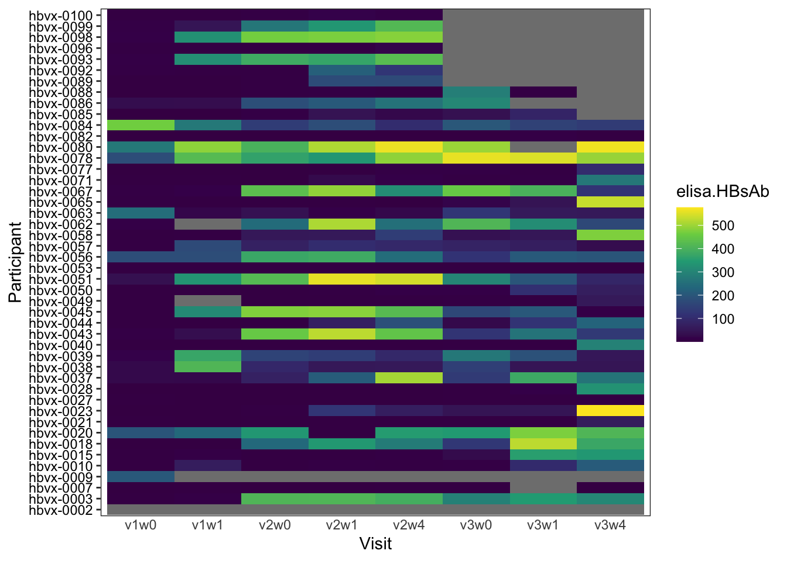
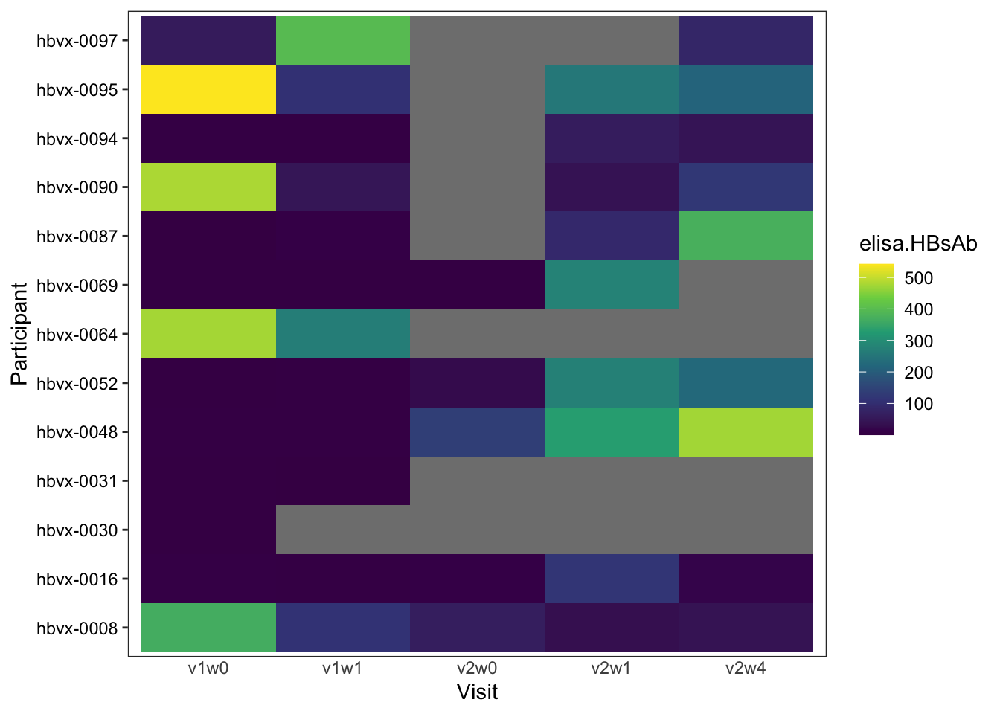
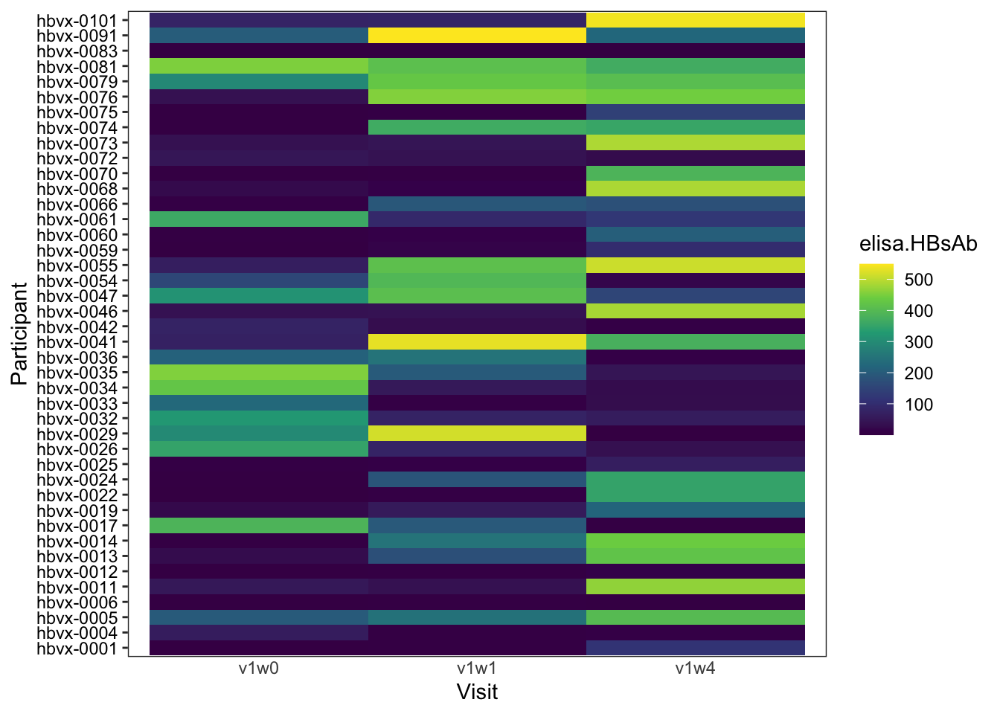

This document details the process of cleaning, preparing, and analyzing humoral data related to HBV vaccination. The analysis involves several steps, including data import, merging of different batches, handling of duplicates, and integration of metadata. The primary goal is to explore the antibody responses over time, particularly in different age groups and vaccine types.
Rows: 38 Columns: 4
── Column specification ────────────────────────────────────────────────────────
Delimiter: ","
chr (1): SAMPLE
dbl (2): ABS, [ ]
lgl (1): notes
ℹ Use `spec()` to retrieve the full column specification for this data.
ℹ Specify the column types or set `show_col_types = FALSE` to quiet this message.
Rows: 41 Columns: 4
── Column specification ────────────────────────────────────────────────────────
Delimiter: ","
chr (1): SAMPLE
dbl (2): ABS, [ ]
lgl (1): notes
ℹ Use `spec()` to retrieve the full column specification for this data.
ℹ Specify the column types or set `show_col_types = FALSE` to quiet this message.
Rows: 65 Columns: 4
── Column specification ────────────────────────────────────────────────────────
Delimiter: ","
chr (2): SAMPLE, notes
dbl (2): ABS, [ ]
ℹ Use `spec()` to retrieve the full column specification for this data.
ℹ Specify the column types or set `show_col_types = FALSE` to quiet this message.
Rows: 81 Columns: 6
── Column specification ────────────────────────────────────────────────────────
Delimiter: ","
chr (3): A, B, C
dbl (1): mIU
lgl (2): E, F
ℹ Use `spec()` to retrieve the full column specification for this data.
ℹ Specify the column types or set `show_col_types = FALSE` to quiet this message.
# all of the values that are discordant look aberrantly low, so will favor taking simple max of any replicates valuespart_merge <- part_merge[, .SD[which.max(elisa.HBsAb)], by = .(Participant, Visit)]rm(discrep.values)part_merge$mIU.ave <- part_merge$mIU.n <- part_merge$discrepancy <- part_merge$make.unique <-NULLpart_merge <- part_merge[!Participant =='0']part_merge[, Participant :=paste0("hbvx-", Participant)]joined.elisa <-rbind(joined.elisa, part_merge)joined.elisa[, Visit :=tolower(Visit)]joined.elisa[, Participant :=tolower(Participant)]joined.elisa[, make.unique :=paste0(Participant, "_", Visit)] # search for duplicates joined.elisa[duplicated(make.unique), make.unique] # 122 duplicate entries found
reconciled.joined.elisa <- joined.elisa[, .(# 1. Apply logic for mIUelisa.HBsAb =if (.N ==1) { elisa.HBsAb # If not a duplicate, keep value } elseif (any(elisa.HBsAb <10)) {max(elisa.HBsAb) # If one is < 10, keep the larger value (low value could represent assay failure) } else {mean(elisa.HBsAb) # If both (all) are > 10, find the average },# 2. Keep the first entry for other descriptive columnsParticipant = Participant[1], Visit = Visit [1] ), by = make.unique]rm(part_merge, b0, joined.elisa)# > reconciled.joined.elisa# make.unique elisa.HBsAb Participant Visit# <char> <num> <char> <char># 1: hbvx-0003_v3w0 290.266822 hbvx-0003 v3w0# 2: hbvx-0003_v3w1 345.778788 hbvx-0003 v3w1# 3: hbvx-0014_v1w0 5.562096 hbvx-0014 v1w0# 4: hbvx-0015_v3w3 288.583638 hbvx-0015 v3w3
Rows: 101 Columns: 34
── Column specification ────────────────────────────────────────────────────────
Delimiter: ","
chr (17): Participant, Sex, Race, Ethnicity, StatusAtEnrollment, KnownNR, P...
dbl (11): Age, BMI, YearsSinceLastVax, HBsAb1.quant, PackYear, YearsSinceQu...
date (6): FirstVisit, DateEnrolled, HBsAb1date, HBcAbdate, DateLastVaxBefor...
ℹ Use `spec()` to retrieve the full column specification for this data.
ℹ Specify the column types or set `show_col_types = FALSE` to quiet this message.
Participant FirstVisit Age Sex Race Ethnicity
<char> <Date> <num> <char> <char> <char>
1: hbvx-0002 2022-09-06 41 M White/Caucasian Not Hispanic
2: hbvx-0003 2022-09-13 39 M White/Caucasian Not Hispanic
3: hbvx-0007 2023-01-18 76 M White/Caucasian Not Hispanic
4: hbvx-0009 2023-03-02 72 F White/Caucasian Not Hispanic
5: hbvx-0010 2023-03-07 73 M White/Caucasian Not Hispanic
6: hbvx-0015 2023-05-04 63 M White/Caucasian Not Hispanic
7: hbvx-0018 2023-05-16 55 F White/Caucasian Not Hispanic
8: hbvx-0020 2023-06-01 75 M White/Caucasian Not Hispanic
9: hbvx-0021 2023-06-08 70 M White/Caucasian Not Hispanic
10: hbvx-0023 2023-07-13 56 M Black/AfricanAmerican Not Hispanic
11: hbvx-0027 2023-08-01 60 M Black/AfricanAmerican Not Hispanic
12: hbvx-0028 2023-09-26 66 M White/Caucasian Not Hispanic
13: hbvx-0037 2023-12-05 72 M White/Caucasian Not Hispanic
14: hbvx-0038 2023-12-05 41 F White/Caucasian Not Hispanic
15: hbvx-0039 2023-12-11 56 F White/Caucasian Not Hispanic
16: hbvx-0040 2023-12-13 51 M Black/AfricanAmerican Not Hispanic
17: hbvx-0043 2024-01-18 41 F Black/AfricanAmerican Hispanic
18: hbvx-0044 2024-01-23 46 M Black/AfricanAmerican Hispanic
19: hbvx-0045 2024-01-30 28 F White/Caucasian Not Hispanic
20: hbvx-0049 2024-03-14 74 M White/Caucasian Not Hispanic
21: hbvx-0050 2024-03-19 48 F Black/AfricanAmerican Not Hispanic
22: hbvx-0051 2024-03-26 40 F White/Caucasian Hispanic
23: hbvx-0053 2024-04-23 53 F White/Caucasian Not Hispanic
24: hbvx-0056 2024-06-04 72 M Black/AfricanAmerican Not Hispanic
25: hbvx-0057 2024-06-04 62 M Black/AfricanAmerican Not Hispanic
26: hbvx-0058 2024-06-05 35 M Black/AfricanAmerican Not Hispanic
27: hbvx-0062 2024-10-02 47 F White/Caucasian Not Hispanic
28: hbvx-0063 2024-12-10 54 F Black/AfricanAmerican Not Hispanic
29: hbvx-0065 2025-01-15 70 F White/Caucasian Not Hispanic
30: hbvx-0067 2025-01-30 76 M White/Caucasian Not Hispanic
31: hbvx-0071 2025-02-19 78 F White/Caucasian Not Hispanic
32: hbvx-0077 2025-03-19 59 F Black/AfricanAmerican Not Hispanic
33: hbvx-0078 2025-03-20 82 F Multiple/NR Not Hispanic
34: hbvx-0080 2025-04-08 33 F Asian Not Hispanic
35: hbvx-0082 2025-04-15 90 M White/Caucasian Not Hispanic
36: hbvx-0084 2025-05-13 67 M White/Caucasian Not Hispanic
37: hbvx-0085 2025-05-20 79 M White/Caucasian Not Hispanic
38: hbvx-0086 2025-05-27 49 F Black/AfricanAmerican Not Hispanic
39: hbvx-0088 2025-06-03 53 M White/Caucasian Not Hispanic
40: hbvx-0089 2025-06-05 52 F Asian Not Hispanic
41: hbvx-0092 2025-07-30 73 M White/Caucasian Not Hispanic
42: hbvx-0093 2025-07-31 63 F Black/AfricanAmerican Not Hispanic
43: hbvx-0096 2025-09-23 64 F White/Caucasian Not Hispanic
44: hbvx-0098 2025-10-09 26 F Multiple/NR Not Hispanic
45: hbvx-0099 2025-10-21 53 M Black/AfricanAmerican Not Hispanic
46: hbvx-0100 2025-10-30 62 F White/Caucasian Not Hispanic
Participant FirstVisit Age Sex Race Ethnicity
BMI StatusAtEnrollment KnownNR Product DateEnrolled YearsSinceLastVax
<num> <char> <char> <char> <Date> <num>
1: 29.6 HBVnaive N EngerixB 2022-09-01 NA
2: 25.4 HBVnaive N EngerixB 2022-09-12 NA
3: 28.7 HBVnaive N EngerixB 2023-01-18 NA
4: 24.1 HBVnaive N EngerixB 2023-03-01 NA
5: 24.2 HBVnaive N EngerixB 2023-03-03 NA
6: 29.4 HBVnaive N EngerixB 2023-05-08 NA
7: 19.9 HBVnaive N EngerixB 2023-05-13 NA
8: 29.2 HBVnaive N EngerixB 2023-06-02 NA
9: 26.8 HBVnaive N EngerixB 2023-06-10 NA
10: 28.8 HBVnaive N EngerixB 2023-07-16 NA
11: 23.6 HBVnaive N EngerixB 2023-07-28 NA
12: 24.2 HBVnaive N EngerixB 2023-09-22 NA
13: 21.8 HBVnaive N EngerixB 2023-12-06 NA
14: 39.5 HBVnaive N EngerixB 2023-12-03 NA
15: 23.7 HBVnaive N EngerixB 2023-12-08 NA
16: 36.8 HBVnaive N EngerixB 2023-12-18 NA
17: 38.4 HBVnaive N EngerixB 2024-01-19 NA
18: 26.7 HBVnaive N EngerixB 2024-01-19 NA
19: 29.2 HBVnaive N EngerixB 2024-01-30 NA
20: 25.4 HBVnaive N EngerixB 2024-03-15 NA
21: 34.8 HBVnaive N EngerixB 2024-03-18 NA
22: 22.3 HBVnaive N EngerixB 2024-03-31 NA
23: 24.1 HBVnaive N EngerixB 2024-04-24 NA
24: 25.0 HBVnaive N EngerixB 2024-06-06 NA
25: 29.5 HBVnaive N EngerixB 2024-06-01 NA
26: 29.1 HBVnaive N EngerixB 2024-06-10 NA
27: 27.4 HBVnaive N EngerixB 2024-09-27 NA
28: 21.3 HBVnaive N EngerixB 2024-12-09 NA
29: 25.5 HBVnaive N EngerixB 2025-01-13 NA
30: 22.8 HBVnaive N EngerixB 2025-01-28 NA
31: 22.5 HBVnaive N EngerixB 2025-02-18 NA
32: 31.8 HBVnaive N EngerixB 2025-03-14 NA
33: 17.7 HBVnaive N EngerixB 2025-03-19 NA
34: 23.9 HBVnaive N EngerixB 2025-04-07 NA
35: 25.1 HBVnaive N EngerixB 2025-04-13 NA
36: 30.4 HBVnaive N EngerixB 2025-05-09 NA
37: 24.5 HBVnaive N EngerixB 2025-05-25 NA
38: 31.3 HBVnaive N EngerixB 2025-05-29 NA
39: 38.7 HBVnaive N EngerixB 2025-06-08 NA
40: 23.2 HBVnaive N EngerixB 2025-06-09 NA
41: 23.1 HBVnaive N EngerixB 2025-07-29 NA
42: 27.7 HBVnaive N EngerixB 2025-08-03 NA
43: 17.9 HBVnaive N EngerixB 2025-09-26 NA
44: 21.9 HBVnaive N EngerixB 2025-10-08 NA
45: 32.7 HBVnaive N EngerixB 2025-10-18 NA
46: 19.3 HBVnaive N EngerixB 2025-11-03 NA
BMI StatusAtEnrollment KnownNR Product DateEnrolled YearsSinceLastVax
HBsAb1.quant HBsAb1.qual HBsAb1date HBcAb.qual HBcAbdate SmokingStatus
<num> <char> <Date> <char> <Date> <char>
1: NA <NA> <NA> <NA> <NA> Active
2: NA <NA> <NA> <NA> <NA> Quit
3: NA <NA> <NA> <NA> <NA> Never
4: NA Pos 2021-07-20 <NA> <NA> Quit
5: NA <NA> <NA> <NA> <NA> Never
6: NA <NA> <NA> <NA> <NA> Never
7: NA <NA> <NA> <NA> <NA> Never
8: NA <NA> <NA> <NA> <NA> Never
9: NA <NA> <NA> <NA> <NA> Active
10: NA <NA> <NA> <NA> <NA> Active
11: NA <NA> <NA> <NA> <NA> Quit
12: 0.0 Neg 2023-03-25 <NA> <NA> Quit
13: NA <NA> <NA> <NA> <NA> Never
14: NA <NA> <NA> <NA> <NA> Never
15: 1000.0 Pos 2024-02-09 <NA> <NA> Never
16: NA <NA> <NA> <NA> <NA> Never
17: 14.7 Pos 2023-10-17 <NA> <NA> Never
18: NA <NA> <NA> <NA> <NA> Quit
19: NA <NA> <NA> <NA> <NA> Never
20: NA <NA> <NA> <NA> <NA> Never
21: NA <NA> <NA> <NA> <NA> Never
22: NA <NA> <NA> <NA> <NA> Never
23: NA <NA> <NA> <NA> <NA> Never
24: NA Pos 2025-02-26 <NA> <NA> Quit
25: 0.0 Neg 2024-05-31 <NA> <NA> Quit
26: 3.2 Neg 2021-04-25 <NA> <NA> Never
27: NA <NA> <NA> <NA> <NA> Never
28: NA <NA> <NA> <NA> <NA> Never
29: NA <NA> <NA> <NA> <NA> Never
30: NA <NA> <NA> <NA> <NA> Active
31: NA <NA> <NA> <NA> <NA> Quit
32: NA <NA> <NA> <NA> <NA> Never
33: NA <NA> <NA> <NA> <NA> Never
34: NA <NA> <NA> <NA> <NA> Never
35: NA <NA> <NA> <NA> <NA> Never
36: NA <NA> <NA> <NA> <NA> Quit
37: NA <NA> <NA> <NA> <NA> Quit
38: NA <NA> <NA> <NA> <NA> Never
39: NA <NA> <NA> <NA> <NA> Quit
40: NA <NA> <NA> <NA> <NA> Never
41: 0.0 Neg 2024-07-24 Neg 2024-07-24 Never
42: NA <NA> <NA> <NA> <NA> Active
43: 0.0 Neg 2024-08-21 <NA> <NA> Never
44: NA <NA> <NA> <NA> <NA> <NA>
45: 0.0 Neg 2023-03-12 Neg 2023-03-12 Active
46: NA <NA> <NA> <NA> <NA> Active
HBsAb1.quant HBsAb1.qual HBsAb1date HBcAb.qual HBcAbdate SmokingStatus
PackYear YearsSinceQuit
<num> <num>
1: 10.0 NA
2: 1.0 10
3: NA NA
4: 110.0 37
5: NA NA
6: NA NA
7: NA NA
8: NA NA
9: 10.0 NA
10: 11.0 NA
11: 5.0 20
12: 30.0 20
13: NA NA
14: NA NA
15: NA NA
16: NA NA
17: NA NA
18: 10.0 14
19: NA NA
20: NA NA
21: NA NA
22: NA NA
23: NA NA
24: 15.0 19
25: NA 15
26: NA NA
27: NA NA
28: NA NA
29: NA NA
30: 28.6 NA
31: 5.0 45
32: NA NA
33: NA NA
34: NA NA
35: NA NA
36: 15.0 3
37: 9.0 53
38: NA NA
39: 8.0 4
40: NA NA
41: NA NA
42: 25.4 NA
43: NA NA
44: NA NA
45: 13.0 NA
46: 26.0 NA
PackYear YearsSinceQuit
CurrentMeds
<char>
1: metformin; glyburide
2: pantoprazole; tizanidine
3: bupropion;cholecalciferol;losartan;amlodipine;melatonin
4: denosumab;escitalopram;ondansetron;fexofenadine
5: meloxicam;cholecalciferol;oxycodone;docosahexaenoic acid
6: atorvastatin;metformin;trazodone;venlafaxine
7: <NA>
8: testosterone
9: aspirin;atorvastatin
10: <NA>
11: <NA>
12: <NA>
13: cetirizine
14: cholecalciferol;loratadine
15: diclofenac;glycopyrrolate
16: <NA>
17: bupropion;liraglutide;famotidine
18: <NA>
19: <NA>
20: escitalopram
21: cetirizine;venlafaxine;risperidone;buspirone
22: <NA>
23: bupropion;quetiapine;acyclovir;tramadol
24: etravirine;darunavir;atorvastatin;bupropion
25: atorvastatin;gabapentin
26: <NA>
27: metformin;methylphenidate;;
28: loratadine;amlodipine;losartan;hydrochlorothiazide
29: estradiol;cholecalciferol
30: aspirin;ramelteon
31: <NA>
32: amlodipine
33: aspirin;atorvastatin;gabapentin;valsartan
34: paroxetine
35: semaglutide;atorvastatin;finasteride;lisinopril
36: bupropion;truvada;acyclovir
37: amlodipine;lisinopril;dextroamphetamine;metoprolol;acetylcarnitine;tadalafil;evolocumab
38: duloxetine;buspirone;pyridostigmine;eplontersen
39: metformin
40: <NA>
41: aspirin;atorvastatin;famotidine;losartan
42: <NA>
43: alendronate
44: <NA>
45: lisinopril
46: <NA>
CurrentMeds
DateLastVaxBeforeBiopsy Ultrasound LNBx Heightcm V1weightkg V2weightkg
<Date> <Date> <char> <num> <num> <num>
1: 2022-09-01 <NA> <NA> 184.0 100.1 NA
2: 2023-03-22 <NA> <NA> 182.9 85.0 NA
3: 2023-08-08 <NA> <NA> 167.6 80.6 NA
4: 2023-03-01 <NA> <NA> 162.6 63.8 NA
5: 2023-09-08 2023-09-21 N 170.8 70.5 NA
6: 2023-12-04 2023-12-19 N 182.9 98.2 NA
7: 2023-12-08 <NA> <NA> 154.9 47.8 NA
8: 2024-01-10 2024-01-25 N 182.9 97.5 NA
9: 2023-07-29 2023-08-10 N 185.4 92.2 89.4
10: 2024-02-03 <NA> <NA> 182.9 96.2 104.9
11: 2024-02-02 <NA> <NA> 177.8 74.5 78.4
12: 2023-10-27 2023-11-09 N 182.9 80.8 84.9
13: 2024-06-27 2024-07-13 N 157.5 54.0 54.4
14: 2024-09-29 2024-10-13 N 157.5 97.9 96.0
15: 2024-09-09 <NA> <NA> 175.2 72.7 72.2
16: 2024-07-06 2024-07-21 N 172.7 109.8 105.8
17: 2024-09-26 2024-10-15 Y 154.9 92.1 87.0
18: 2024-11-15 2024-11-30 N 170.2 77.4 75.4
19: 2024-12-03 2024-12-18 N 165.1 79.7 80.1
20: 2024-10-10 <NA> <NA> 177.8 80.2 79.2
21: 2024-11-19 2024-12-02 N 160.0 89.2 91.4
22: 2024-11-19 <NA> <NA> 172.7 66.4 66.2
23: 2024-11-27 2024-12-12 N 175.3 73.9 72.7
24: 2025-01-16 2025-01-31 N 180.3 81.3 81.6
25: 2025-01-12 2025-01-27 N 188.0 104.2 102.4
26: 2025-03-02 2025-03-23 Y 175.3 88.3 87.0
27: 2025-05-01 2025-05-15 N NA NA NA
28: 2025-06-24 2025-07-07 Y 165.1 58.1 58.1
29: 2025-09-07 2025-09-20 N 165.1 69.4 68.0
30: 2025-09-28 <NA> <NA> 165.1 62.1 62.1
31: 2025-09-23 2025-10-07 N 152.4 52.2 NA
32: 2025-09-25 2025-10-08 N 167.6 89.3 NA
33: 2025-09-23 <NA> <NA> 162.6 46.7 NA
34: 2025-05-19 <NA> <NA> 160.0 61.2 NA
35: 2025-11-03 <NA> <NA> 175.3 77.1 NA
36: 2025-06-14 <NA> <NA> 180.3 98.7 NA
37: 2025-06-29 <NA> <NA> 169.5 70.4 70.3
38: 2025-07-11 <NA> <NA> 157.5 77.7 NA
39: 2025-07-21 <NA> <NA> 190.5 140.6 NA
40: 2025-07-12 <NA> <NA> 162.6 61.2 NA
41: 2025-09-08 <NA> <NA> 185.4 79.3 80.2
42: 2025-09-13 <NA> <NA> 172.7 82.5 NA
43: 2025-10-30 <NA> <NA> 167.6 50.3 NA
44: 2025-10-08 <NA> <NA> 160.0 56.0 NA
45: 2025-10-18 <NA> <NA> 182.9 109.5 NA
46: 2025-11-03 <NA> <NA> 157.5 48.0 NA
DateLastVaxBeforeBiopsy Ultrasound LNBx Heightcm V1weightkg V2weightkg
V3weightkg Notes V1W0.laterality
<num> <char> <char>
1: NA <NA> <NA>
2: 84.3 <NA> RD
3: 82.7 <NA> RD
4: NA <NA> LD
5: NA <NA> LD
6: 96.4 <NA> <NA>
7: 46.9 <NA> <NA>
8: 101.8 <NA> LD
9: 92.7 <NA> LD
10: 97.5 <NA> LD
11: 77.2 <NA> <NA>
12: 87.5 <NA> <NA>
13: 53.3 <NA> <NA>
14: 89.4 <NA> <NA>
15: 69.6 <NA> <NA>
16: 95.3 <NA> <NA>
17: 84.5 <NA> <NA>
18: 70.6 <NA> <NA>
19: 82.5 <NA> <NA>
20: 79.8 <NA> <NA>
21: 94.1 <NA> <NA>
22: 66.2 <NA> <NA>
23: 68.3 <NA> <NA>
24: 77.1 ? resolved HBV <NA>
25: 99.9 <NA> <NA>
26: 86.7 <NA> <NA>
27: NA <NA> <NA>
28: 55.3 <NA> RD
29: NA <NA> <NA>
30: NA <NA> <NA>
31: NA <NA> <NA>
32: NA Diagnosed covid on same day as v2w4 visit <NA>
33: NA <NA> <NA>
34: NA <NA> <NA>
35: NA <NA> <NA>
36: NA <NA> <NA>
37: NA <NA> LD
38: NA <NA> <NA>
39: NA <NA> <NA>
40: NA <NA> <NA>
41: NA <NA> LD
42: NA <NA> LD
43: NA <NA> LD
44: NA Parents declined hbv vax as infant LD
45: NA <NA> LD
46: NA <NA> LD
V3weightkg Notes V1W0.laterality
V2W0.laterality V3W0.laterality Study.arm DaysFromVaxToUltrasound
<char> <char> <char> <num>
1: <NA> <NA> HBVnaive-Alum NA
2: RD LD HBVnaive-Alum NA
3: LD LD HBVnaive-Alum NA
4: <NA> <NA> HBVnaive-Alum NA
5: LD LD HBVnaive-Alum 13
6: <NA> <NA> HBVnaive-Alum 15
7: <NA> <NA> HBVnaive-Alum NA
8: LD LD HBVnaive-Alum 15
9: LD RD HBVnaive-Alum 12
10: LD RD HBVnaive-Alum NA
11: <NA> <NA> HBVnaive-Alum NA
12: <NA> <NA> HBVnaive-Alum 13
13: <NA> <NA> HBVnaive-Alum 16
14: <NA> <NA> HBVnaive-Alum 14
15: <NA> <NA> HBVnaive-Alum NA
16: <NA> <NA> HBVnaive-Alum 15
17: <NA> <NA> HBVnaive-Alum 19
18: <NA> <NA> HBVnaive-Alum 15
19: <NA> <NA> HBVnaive-Alum 15
20: <NA> <NA> HBVnaive-Alum NA
21: <NA> <NA> HBVnaive-Alum 13
22: <NA> <NA> HBVnaive-Alum NA
23: <NA> <NA> HBVnaive-Alum 15
24: <NA> <NA> HBVnaive-Alum 15
25: <NA> <NA> HBVnaive-Alum 15
26: <NA> <NA> HBVnaive-Alum 21
27: <NA> <NA> HBVnaive-Alum 14
28: RD LD HBVnaive-Alum 13
29: <NA> <NA> HBVnaive-Alum 13
30: <NA> <NA> HBVnaive-Alum NA
31: <NA> <NA> HBVnaive-Alum 14
32: <NA> <NA> HBVnaive-Alum 13
33: <NA> <NA> HBVnaive-Alum NA
34: <NA> <NA> HBVnaive-Alum NA
35: <NA> <NA> HBVnaive-Alum NA
36: <NA> <NA> HBVnaive-Alum NA
37: LD <NA> HBVnaive-Alum NA
38: <NA> <NA> HBVnaive-Alum NA
39: <NA> <NA> HBVnaive-Alum NA
40: <NA> <NA> HBVnaive-Alum NA
41: LD <NA> HBVnaive-Alum NA
42: LD <NA> HBVnaive-Alum NA
43: <NA> <NA> HBVnaive-Alum NA
44: <NA> <NA> HBVnaive-Alum NA
45: <NA> <NA> HBVnaive-Alum NA
46: <NA> <NA> HBVnaive-Alum NA
V2W0.laterality V3W0.laterality Study.arm DaysFromVaxToUltrasound
v1w0 v1w1 v2w0 v2w1 v2w4 v3w0 v3w1 v3w4
<lgcl> <lgcl> <lgcl> <lgcl> <lgcl> <lgcl> <lgcl> <lgcl>
1: NA NA NA NA NA NA NA NA
2: NA NA NA NA NA NA NA NA
3: NA NA NA NA NA NA NA NA
4: NA NA NA NA NA NA NA NA
5: NA NA NA NA NA NA NA NA
6: NA NA NA NA NA NA NA NA
7: NA NA NA NA NA NA NA NA
8: NA NA NA NA NA NA NA NA
9: NA NA NA NA NA NA NA NA
10: NA NA NA NA NA NA NA NA
11: NA NA NA NA NA NA NA NA
12: NA NA NA NA NA NA NA NA
13: NA NA NA NA NA NA NA NA
14: NA NA NA NA NA NA NA NA
15: NA NA NA NA NA NA NA NA
16: NA NA NA NA NA NA NA NA
17: NA NA NA NA NA NA NA NA
18: NA NA NA NA NA NA NA NA
19: NA NA NA NA NA NA NA NA
20: NA NA NA NA NA NA NA NA
21: NA NA NA NA NA NA NA NA
22: NA NA NA NA NA NA NA NA
23: NA NA NA NA NA NA NA NA
24: NA NA NA NA NA NA NA NA
25: NA NA NA NA NA NA NA NA
26: NA NA NA NA NA NA NA NA
27: NA NA NA NA NA NA NA NA
28: NA NA NA NA NA NA NA NA
29: NA NA NA NA NA NA NA NA
30: NA NA NA NA NA NA NA NA
31: NA NA NA NA NA NA NA NA
32: NA NA NA NA NA NA NA NA
33: NA NA NA NA NA NA NA NA
34: NA NA NA NA NA NA NA NA
35: NA NA NA NA NA NA NA NA
36: NA NA NA NA NA NA NA NA
37: NA NA NA NA NA NA NA NA
38: NA NA NA NA NA NA NA NA
39: NA NA NA NA NA NA NA NA
40: NA NA NA NA NA NA NA NA
41: NA NA NA NA NA NA NA NA
42: NA NA NA NA NA NA NA NA
43: NA NA NA NA NA NA NA NA
44: NA NA NA NA NA NA NA NA
45: NA NA NA NA NA NA NA NA
46: NA NA NA NA NA NA NA NA
v1w0 v1w1 v2w0 v2w1 v2w4 v3w0 v3w1 v3w4
merged[elisa_mergeMeta, on = .(Participant_Visit = make.unique), elisa.HBsAb := i.elisa.HBsAb]merged[group =="alum"] %>%ggplot(aes(x = Visit, y = Participant, fill = elisa.HBsAb)) +geom_tile() +ct2 +scale_fill_viridis_c()

merged[group =="cpg"] %>%ggplot(aes(x = Visit, y = Participant, fill = elisa.HBsAb)) +geom_tile() +ct2 +scale_fill_viridis_c()

merged[group =="boost"] %>%ggplot(aes(x = Visit, y = Participant, fill = elisa.HBsAb)) +geom_tile() +ct2 +scale_fill_viridis_c()

old processing here onward…. can delete?
# Data from multiple batches are loaded from different files.b0 <-read_xlsx("./data/elisa_output.xlsx")part_merge <-read_xlsx("./data/traditional_elisa_merged_batch_cmrs_rs.batch1.xlsx")b2 <-read_csv("./data/20240802_hbv_elisa_batch2_riddhimaa.csv")b3 <-read_csv("./data/20241112_hbv_elisa_batch3_riddhimaa.csv")b4 <-read_csv("./data/20250402_hbv_elisa_batch4_riddhimaa.csv")b5 <-read_csv("./data/20250620_hbv_elisa_batch5_riddhimaa.csv")# --- Format Each Batch ---# Each batch is formatted to have consistent column names and data types.# This involves extracting subject IDs, timepoints, and ELISA values from different column structures.# Batch 2b2$timepoint <-tolower(substr(b2$SAMPLE, 1, 4))b2$subject <-paste0("00", substr(b2$SAMPLE, 6,7))b2$elisa <- b2$`[ ]`b2$collected_by <-"RS"b2$experiment <-as.character("20240802")# Batch 3b3$timepoint <-tolower(substr(b3$SAMPLE, 4, 7))b3$subject <-paste0("00", substr(b3$SAMPLE, 1,2))b3$elisa <- b3$`[ ]`b3$collected_by <-"RS"b3$experiment <-as.character("20241112")# Batch 4b4$timepoint <-tolower(substr(b4$SAMPLE, 4, 7))b4$subject <-paste0("00", substr(b4$SAMPLE, 1,2))b4$elisa <- b4$`[ ]`b4$collected_by <-"RS"b4$experiment <-as.character("20250402")# Batch 5b5$timepoint <-tolower(b5$B)b5$subject <-substr(b5$A, 10,13)b5$elisa <- b5$mIUb5$collected_by <-"RS"b5$experiment <-as.character("20250620")# Batch 0 (unlabeled)b0$timepoint <-paste0("v", substr(b0$`Event Name`, 7, 7), "w", substr(b0$`Event Name`, 16, 16))b0$subject <-substr(b0$`Participant ID`, 6, 9)b0$experiment <-"??"b0$collected_by <-"??"b0$elisa <- b0$`ELISA Value`b0$note <-ifelse(!is.na(b0$`ELISA Value Issue`),paste0(b0$`ELISA Value Issue`, "_elisa_value_issue"),NA)# --- Merge All Batches ---# The formatted batches are merged into a single dataframe.colnames(part_merge)b2$note <-NAb3$note <-NAb4$note <-NAb5$note <-NAb0$note# --- Load and Process REDCap Metadata ---rs.redcap <-read.csv("./data/202506_redcap_meta.csv")rs.redcap$subject <-substr(rs.redcap$Participant.ID, 6, 9)rs.redcap <- rs.redcap %>%filter(!grepl("optional", Event.Name, ignore.case =TRUE))rs.redcap$timepoint <-paste0("v", substr(rs.redcap$Event.Name, 7,7), "w", substr(rs.redcap$Event.Name, 16,16))rs.redcap$elisa <- rs.redcap$ELISA.Value# The following commented out code was likely used for initial data validation,# checking for overlaps between the ELISA data and the REDCap metadata.# overlap <- df %>%# semi_join(rs.redcap, by = c("subject", "timepoint", "elisa"))rs.redcap$note <-"other"rs.redcap$experiment <-NArs.redcap$collected_by <-NA# Anti-join to find non-matched rows, expecting none.not_matched <- rs.redcap %>%anti_join(rs.redcap, by =c("subject", "timepoint", "elisa"))not_matched# Set common columns for merging.part_mergepart_merge$experiment <-as.character(part_merge$experiment)keep_cols <-c("elisa", "subject", "timepoint", "experiment", "collected_by", "note")part_merge$elisa <- part_merge$mIU# Bind rows from all batches.merged <-bind_rows(select(part_merge, all_of(keep_cols)),select(b0, all_of(keep_cols)),select(b2, all_of(keep_cols)),select(b3, all_of(keep_cols)),select(b4, all_of(keep_cols)),select(b5, all_of(keep_cols)))# --- Clean Data ---# This section handles duplicates and filters out irrelevant data.df <- merged# Remove rows with specific notes indicating issues or repeats.table(df$note)df <- df %>%filter(!grepl(c("1000x_dilution|repeat|yes_elisa_value_issue"), note, ignore.case =TRUE))# Identify and handle duplicate rows.dup_rows <- df %>%group_by(elisa, subject, timepoint) %>%filter(n() >1) %>%ungroup()dup_rowsto_remove <- dup_rows %>%filter(experiment =="??")no_dup <- df %>%# Remove duplicate rows from the unlabeled experiment.anti_join(to_remove, by =c("elisa", "subject", "timepoint", "experiment"))dup_rows2 <- no_dup %>%group_by(elisa, subject, timepoint) %>%filter(n() >1) %>%ungroup()# The following commented out lines were likely for intermediate data checks.#no_dup <- no_dup %>% filter(!is.na(elisa))#table(no_dup$experiment)#df <- no_dup # Filter out irrelevant timepoints and subjects.df <- df %>%filter(!timepoint %in%c("16", "17", "18")) %>%filter(!subject %in%c("0"))
Block 2: Handle Duplicates and Add Metadata
# This section deals with cases where there are multiple measurements for the same subject at the same timepoint.dfdf <- df %>%filter(!is.na(elisa))length(unique(df$subject))unique(df$subject)table(df$experiment)unique_combinations <-unique(df[, c("subject", "timepoint")]) unique_combinations# Identify rows with duplicated subject-timepoint combinations.dup_rows <- df %>%group_by(subject, timepoint) %>%filter(n() >1) %>%ungroup()# Visualize the duplicated measurements for a specific subject.dup_rows %>%filter(subject =="0018") %>%ggplot(aes(x = timepoint, y = elisa)) +geom_point(aes(color = note)) +geom_line(aes(group = subject)) + ct2 +facet_wrap(~ subject)# Visualize all duplicated measurements.dup_rows %>%ggplot(aes(x = timepoint, y = elisa)) +geom_point(aes(color = note)) +geom_line(aes(group = subject)) + ct2 +facet_wrap(~ subject)# Plot all data points to visually inspect for duplicates and other issues.df %>%ggplot(aes(x = timepoint, y = elisa)) +geom_point(aes(color = note)) +geom_line(aes(group = subject)) + ct2 +facet_wrap(~ subject)df %>%ggplot(aes(x = timepoint, y = elisa)) +geom_point(aes(color = note)) +geom_line(aes(group = subject)) + ct2 # Calculate the percentage deviation for duplicated measurements.temp <- dup_rows %>%group_by(subject, timepoint) %>%mutate(elisa_mean =mean(elisa, na.rm =TRUE), percent_dev =100* (elisa - elisa_mean) / elisa_mean) %>%ungroup()# Visualize the percentage deviation.temp %>%ggplot(aes(x = timepoint, y = percent_dev)) +geom_quasirandom() + ct2# --- Remove Negative Values ---# Negative ELISA values are set to a small positive value (0.01).df <- df %>%mutate(elisa =ifelse(elisa <=0, 0.01, elisa))# --- Average Multiple Measurements ---# For duplicated subject-timepoint entries, the ELISA values are averaged.df1 <- df %>%group_by(subject, timepoint) %>%summarise(elisa =mean(elisa, na.rm =TRUE),note =paste(unique(note), collapse =", "),experiment =paste(unique(experiment), collapse =", "),collected_by =paste(unique(collected_by), collapse =", "),n =n() ) %>%ungroup()# Check for remaining duplicates.dup_rows <- df1 %>%group_by(subject, timepoint) %>%filter(n() >1) %>%ungroup()dup_rows# Visualize data for subjects with lymph node samples.df1 %>%filter(subject %in%c("0022", "0029", "0033", "0036", "0041", "0043", "0058", "0069", "0076", "0063")) %>%ggplot(aes(x = timepoint, y = elisa)) +geom_point(aes(color = subject)) +geom_line(aes(group = subject)) + ct2 df.clean <- df1# Clean up the environment.rm(list =setdiff(ls(), c("df.clean", "ct2")))
— Add Metadata —
# Metadata, such as participant demographics and vaccination status, is added to the main dataframe.meta <-fread("./data/20251102 HBV metadata.csv")meta <- meta[, subject:=substr(ParticipantID, 10, 13)]df.merge <-merge(meta, df.clean, by ="subject", all =TRUE)df.merge[, Cohort:='PriorHBVimmunity']df.merge[StatusAtEnrollment =="No Hep B Vx"& Product=='EngerixB', Cohort:='Randomized-Alum']df.merge[StatusAtEnrollment =="No Hep B Vx"& Product=='Heplisav', Cohort:='Randomized-CpG']# Merge additional metadata from REDCap.meta2 <-read.csv("./data/202506_redcap_meta.csv")meta2$subject <-substr(meta2$Participant.ID, 6, 9)meta2$timepoint <-paste0("v", substr(meta2$Event.Name, 7,7), "w", substr(meta2$Event.Name, 16,16))meta2 <- meta2 %>%filter(!grepl("optional", Event.Name, ignore.case =TRUE))temp <-merge(df.merge, meta2 %>%select(BMI..calculated., BMI.stratum,Age.at.time.of.Consent, subject, timepoint, X2M, X4M, Biological.Sex), by =c("subject", "timepoint") )# Check for duplicates after merging metadata.temp %>%group_by(subject, timepoint) %>%summarize(n =n(), .groups ="drop") %>%filter(n >1)# Remove any remaining duplicates after merging metadata.df <- temp %>%distinct(subject, timepoint, .keep_all =TRUE)# Create a binary variable for lymph node biopsy.df[, lnbx:=ifelse(subject %in%c("0022","0029","0033","0036","0041","0043","0058","0069","0076","0063"), "yes", "no")]# Create a binary variable for ELISA > 10.df[, `elisa_greater_10`:=ifelse(elisa >10, "yes", "no")]# Define protection status based on ELISA levels at a specific timepoint.# if any elisa value for a given individual is >10 then classify as "Responder"df[, end_protection_status :=ifelse(any(elisa >10, na.rm =TRUE), "Responder", "Non-responder"), by = .(subject)]df$DateEnrolled <-as.Date(df$DateEnrolled, format="%m/%d/%Y")df$HBsAb1date <-as.Date(df$HBsAb1date, format="%m/%d/%Y")df$HBcAbdate <-as.Date(df$HBcAbdate, format="%m/%d/%Y")df[, CurrentMeds.list :=strsplit(CurrentMeds, split =";")]df[, PastHistory.list :=strsplit(PastHistory, split =";")]df$CurrentMeds <-NULL; df$PastHistory <-NULL# Clean up the environment.rm(df.merge,temp, meta, meta2, df.clean)
# Save the final merged data with metadata.fwrite(df, "./outs/20250828_hbv_merged_elisa_final_with_meta.csv")saveRDS(df, "./outs/20250828_hbv_merged_elisa_final_with_meta.rds")
— Organize and Derive New Variables —
# This section creates new variables for analysis and visualization.table(df$Cohort)# Plot ELISA values over time for each group.ggplot(df, aes(y = elisa, x = timepoint, group=subject)) +geom_line() +geom_point() + ct2 +facet_wrap(~Cohort)# Visualize protection status over time for the Alum group.ggplot(df[ Cohort =="Randomized-Alum"], aes(x = timepoint, y = elisa)) +geom_point(aes(group = subject, color = end_protection_status)) +geom_line(aes(color = end_protection_status, group = subject)) +ct2 +scale_y_log10(labels = scales::label_number())# Visualize ELISA > 10 status over time for the Alum group.ggplot(df[ Cohort =="Randomized-Alum"], aes(x = timepoint, y = elisa)) +geom_point(aes(group = subject, color = elisa_greater_10)) +geom_line(aes(color = elisa_greater_10, group = subject)) +ct2 +scale_y_log10(labels = scales::label_number())# The following lines are for exploring the age variable.ggplot(unique(df, by='subject'), aes(y = Age.at.time.of.Consent, x=Cohort)) +geom_boxplot(color='grey80', alpha=0.5) +geom_beeswarm() + ct2# Visualize age distribution by group.
— T tetramer plots —
df <-fread("./data/All CD4 tTets.csv")names(df) <-c("DRB0101", "DRB0701", "SpecimenID", "visit")df <-melt(df, id.vars =c("SpecimenID", "visit"), measure.vars =c("DRB0101", "DRB0701"), variable.name ="Marker", value.name ="Frequency")ggplot(df, aes(x = visit, y = Frequency, group = SpecimenID, color = SpecimenID)) +geom_line(alpha =0.7, size =0.8) +geom_point(size =2) +facet_wrap(~ Marker, scales ="free_y") +theme_minimal() +labs(title ="Frequency of Parent by Visit", subtitle ="Connected by SpecimenID", y ="Frequency", x ="Visit Timepoint") +theme(axis.text.x =element_text(angle =45, hjust =1)) +scale_y_log10()
— Exploratory Analysis —
# Check for missing age data for a specific subject.#0015 missing one age point df %>% filter(subject == "0015") %>% pull(age)# Calculate mean and standard deviation of age for each group.df %>%distinct(subject, .keep_all =TRUE) %>%# one row per subject group_by(group) %>%summarize( mean_age =mean(age, na.rm =TRUE), sd_age =sd(age, na.rm =TRUE) )df %>%group_by(group) %>%distinct(subject, .keep_all =TRUE) %>%summarize(mean_age =mean(age, na.rm =TRUE))# Create age groups based on the age variable.df <- df %>%mutate(age_group =cut( age, breaks =c(18, 50, 100), right =FALSE, labels =c("18-49", "50+") ))# Explore the relationship between age and BMI.df$bmi<-df$BMI..calculated. df$sex <- df$Biological.Sex df %>%distinct(subject, .keep_all =TRUE) %>%ggplot(aes(x = age, y = bmi)) +geom_point(aes(color = group))+geom_rug(size=0.1)+ ct2# Save the final processed data.write_xlsx(df, "./outs/20250829_merged_elisa_noDup_noNeg_avg_wMeta")#here df <-read_xlsx("./outs/20250829_merged_elisa_noDup_noNeg_avg_wMeta")# --- Exploratory Data Analysis ---# This section focuses on the "Alum" group, exploring the effect of age on ELISA responses.df.alum <- df %>%filter(group =="Alum", !timepoint =="v3w3", elisa >0) %>%drop_na(elisa, age_group, subject)# Plot individual and mean ELISA levels over time by age group.df.alum %>%ggplot(aes(x = timepoint, y = elisa)) +geom_point(aes(color = age_group), size =1) +geom_line(aes(group = subject, color = age_group), size =0.2) +scale_color_manual(values =c("#8FE0C0","#E0B8DF"), guide ="none") +new_scale_color() +stat_summary(fun=mean, geom="line", aes(color=age_group, group = age_group), size =0.7) +scale_color_manual(values =c("#28b57c","#ce2fbf")) +new_scale_color() +stat_summary(fun=mean, geom="point", shape =21, group =1, aes(fill = age_group), color ="black", size =2)+scale_fill_manual( #labels = c(expression(""<"50"), expression("">="50")), values = c("#28b57c","#ce2fbf")) +scale_color_manual( #labels = c(expression(""<"50"), expression("">="50")), values = c("#28b57c","#ce2fbf")) +geom_hline(yintercept =10, linetype ="dashed", color ="red") +# facet_wrap(~age.group, ncol = 1) +scale_y_log10(labels = scales::label_number()) +#labs(x = "", y = "anti-HBsAg IgG (U/mL)", color = "Age", fill = "Age")+ ct2 +theme(strip.text =element_blank())# Calculate arithmetic mean and confidence intervals.df.alum.mean <- df.alum %>%#arith mean filter(group == "Alum") %>%filter(!timepoint =="v3w3") %>%group_by(timepoint, age_group) %>%summarise(n =n(), mean=mean(elisa), median =median(elisa), sd =sd(elisa)) %>%mutate(sem = sd /sqrt(n -1), CI_lower = mean +qt((1-0.95)/2, n -1) * sem, CI_upper = mean -qt((1-0.95)/2, n -1) * sem)# Plot the arithmetic mean with confidence intervals.ggplot(df_mean, aes(x=timepoint, y=mean, color = age_group, group = age_group)) +geom_line(aes(x=timepoint, y=mean, color=age_group)) +geom_ribbon(aes(ymin=CI_lower,ymax=CI_upper,fill=age_group),color="grey70",alpha=0.4) +ct2 +ylab("elisa")+scale_y_log10(labels = scales::label_number())# --- Geometric Mean and Quartiles ---# Functions are defined to calculate geometric mean and quartiles for visualization.geo_mean <-function(x) { x <- x[x >0] if (length(x) ==0) { return(NA_real_) } exp(mean(log(x))) }# Calculate quartiles for the Alum group.df_quart <- df.alum %>%group_by(timepoint, age_group) %>%summarise( Q1 =exp(quantile(log(elisa), 0.25, na.rm =TRUE)), Q3 =exp(quantile(log(elisa), 0.75, na.rm =TRUE)), .groups ="drop" )# Plot with geometric mean and quartiles.df.alum %>%drop_na(elisa, age_group, subject) %>%# remove any rows with NA in key columns ggplot(aes(x = timepoint, y = elisa)) +geom_ribbon( data = df_quart, aes(x = timepoint, ymin = Q1, ymax = Q3, fill = age_group, group = age_group), inherit.aes =FALSE, alpha =0.2 ) +stat_summary(fun = geo_mean, geom ="line", aes(x =as.numeric(factor(timepoint)), y = elisa, color = age_group, group = age_group)) +geom_point(aes(color = age_group), size =1) +geom_line(aes(group = subject, color = age_group), size =0.2) +scale_color_manual(values =c("#FFAE4D","#AA87E8"), guide ="none") +new_scale_color() +stat_summary(fun = geo_mean, geom="line", aes(color=age_group, group = age_group), size =0.7) +scale_color_manual(values =c("#E66100","#5D3A9B")) +new_scale_color() +stat_summary(fun = geo_mean, geom="point", shape =21, group =1, aes(fill = age_group), color ="black", size =2)+scale_fill_manual( #labels = c(expression(""<"50"), expression("">="50")), values = c("#E66100","#5D3A9B")) +scale_color_manual( #labels = c(expression(""<"50"), expression("">="50")), values = c("#E66100","#5D3A9B")) +geom_hline(yintercept =10, linetype ="dashed", color ="red") +# facet_wrap(~age.group, ncol = 1) +scale_y_log10(labels = scales::label_number()) +#labs(x = "", y = "anti-HBsAg IgG (U/mL)", color = "Age", fill = "Age")+ ct2 +theme(strip.text =element_blank()) # The ribbon in the plot above looks funky, which might indicate an issue with the data or the plotting code.# Define a function to calculate geometric mean and quartiles.geo_summary <-function(x) { x <- x[x >0] if (length(x) ==0) return(data.frame(y =NA, ymin =NA, ymax =NA)) logx <-log(x) data.frame( y =exp(mean(logx)), # geometric mean ymin = exp(quantile(logx, 0.25, na.rm = TRUE)), # Q1 ymax = exp(quantile(logx, 0.75, na.rm = TRUE)) # Q3 ) }# Plot with individual lines and geometric mean.df.alum %>%drop_na(elisa, age_group, subject) %>%ggplot(aes(x = timepoint, y = elisa)) +# individual spaghetti lines geom_point(aes(color = age_group), size = 1) +geom_line(aes(group = subject, color = age_group), size =0.2) +scale_color_manual(values =c("#FFAE4D","#AA87E8"), guide ="none") +new_scale_color() +# The following commented out code shows an alternative way to plot a ribbon. # # quartile ribbon (computed in log space) # stat_summary( # fun.data = geo_summary, # geom = "ribbon", # aes(fill = age_group, group = age_group), # alpha = 0.2 # ) +# geometric mean line stat_summary( fun.data = geo_summary, geom = "line", aes(color = age_group, group = age_group), size = 0.7 ) +# geometric mean points stat_summary( fun.data = geo_summary, geom = "point", shape = 21, aes(fill = age_group, group = age_group), color = "black", size = 2 ) +scale_fill_manual(values =c("#E66100","#5D3A9B")) +scale_color_manual(values =c("#E66100","#5D3A9B")) +geom_hline(yintercept =10, linetype ="dashed", color ="red") +scale_y_log10(labels = scales::label_number()) + ct2 +theme(strip.text =element_blank())# --- Statistical Testing ---# A Wilcoxon test is used to compare ELISA levels between age groups at each timepoint.stat.test <- df.alum %>%drop_na(elisa, age_group, subject) %>%group_by(timepoint) %>%wilcox_test(elisa ~ age_group) %>%adjust_pvalue(method ="BH") %>%add_significance("p.adj") %>%add_xy_position(x ="timepoint", dodge =0.8)stat.test <- stat.test %>%filter(!p.adj.signif =="ns")stat.test <- stat.test %>%mutate(y.position =c(2.8, 3, 3, 3, 2.7)[seq_len(n())])# Plot with significance annotations.df.alum %>%drop_na(elisa, age_group, subject) %>%ggplot(aes(x = timepoint, y = elisa)) +geom_point(aes(color = age_group), size =1, alpha =0.5) +geom_line(aes(group = subject, color = age_group), size =0.2, alpha =0.5) +scale_color_manual(values =c("#FFAE4D","#AA87E8"), guide ="none") +new_scale_color() +stat_summary(fun.data = geo_summary, geom ="line", aes(color = age_group, group = age_group), size =0.7) +stat_summary(fun.data = geo_summary, geom ="point", shape =21, aes(fill = age_group, group = age_group), color ="black", size =2) +scale_fill_manual(values =c("#E66100","#5D3A9B")) +scale_color_manual(values =c("#E66100","#5D3A9B")) +geom_hline(yintercept =10, linetype ="dashed", color ="red") +scale_y_log10(labels = scales::label_number()) + ct2 +theme(strip.text =element_blank()) +stat_pvalue_manual(stat.test, label ="p.adj.signif", tip.length =0.01, hide.ns =TRUE)ggsave("./outs/elisa_timecourse_with_sig.pdf", height =3, width =5)# Define a function to calculate geometric mean and 95% confidence intervals.geo_mean_CI <-function(x) { x <- x[x >0] # drop non-positive values if (length(x) == 0) return(data.frame(y = NA, ymin = NA, ymax = NA)) logx <- log(x) n <- length(logx) mean_log <- mean(logx) se_log <- sd(logx) / sqrt(n) # 95% CI on log scale CI_lower <- mean_log - 1.96 * se_log CI_upper <- mean_log +1.96* se_log data.frame( y =exp(mean_log), # geometric mean ymin = exp(CI_lower), # lower CI ymax = exp(CI_upper) # upper CI ) }# Plot with geometric mean and 95% confidence intervals.df.alum %>%drop_na(elisa, age_group, subject) %>%ggplot(aes(x = timepoint, y = elisa, group = age_group)) +# 95% CI ribbon stat_summary( fun.data = geo_mean_CI, geom = "ribbon", aes(fill = age_group), alpha = 0.25 ) +# Geomean line stat_summary( fun.data = geo_mean_CI, geom = "line", aes(color = age_group), size = 0.5 ) +# The following commented out code shows how to add points for the geomean. # Geomean points # stat_summary( # fun.data = geo_mean_CI, # geom = "point", # aes(fill = age_group), # shape = 21, color = "black", size = 2.5 # ) +# scale_fill_manual(values = c("#E66100","#5D3A9B")) +scale_color_manual(values =c("#E66100","#5D3A9B")) +geom_hline(yintercept =10, linetype ="dashed", color ="red") +scale_y_log10(labels = scales::label_number()) + ct2 +#theme(strip.text = element_blank())+ scale_x_discrete(expand = c(0, 0))ggsave("./outs/titers_timecourse_age.pdf", height =2.5, width =4)# Plot with individual lines, geometric mean, and 95% confidence intervals.df.alum %>%drop_na(elisa, age_group, subject) %>%ggplot(aes(x = timepoint, y = elisa, group = age_group)) +geom_line(aes(group = subject, color = age_group), size =0.2) +scale_color_manual(values =c("#FFAE4D","#AA87E8"), guide ="none") +new_scale_color() +# 95% CI ribbon stat_summary( fun.data = geo_mean_CI, geom = "ribbon", aes(fill = age_group), alpha = 0.25 ) +# Geomean line stat_summary( fun.data = geo_mean_CI, geom = "line", aes(color = age_group), size = 0.5 ) +# The following commented out code shows how to add points for the geomean. # Geomean points # stat_summary( # fun.data = geo_mean_CI, # geom = "point", # aes(fill = age_group), # shape = 21, color = "black", size = 2.5 # ) +# scale_fill_manual(values = c("#E66100","#5D3A9B")) +scale_color_manual(values =c("#E66100","#5D3A9B")) +geom_hline(yintercept =10, linetype ="dashed", color ="red") +scale_y_log10(labels = scales::label_number()) + ct2 +#theme(strip.text = element_blank())+ scale_x_discrete(expand = c(0, 0))ggsave("./outs/titers_timecourse_age_all.pdf", height =2.5, width =4)# Plot with highlighted lymph node biopsy samples.df.alum %>%#highlight lnbx samples drop_na(elisa, age_group, subject) %>%ggplot(aes(x = timepoint, y = elisa, group = age_group)) +# The following commented out code shows how to add individual lines. #geom_line(aes(group = subject, color = age_group), size = 0.2) +#scale_color_manual(values = c("#FFAE4D","#AA87E8"), guide = "none") +new_scale_color() +# 95% CI ribbon stat_summary( fun.data = geo_mean_CI, geom = "ribbon", aes(fill = age_group), alpha = 0.25 ) +# Geomean line stat_summary( fun.data = geo_mean_CI, geom = "line", aes(color = age_group), size = 0.5 ) +# The following commented out code shows how to add points for the geomean. # Geomean points # stat_summary( # fun.data = geo_mean_CI, # geom = "point", # aes(fill = age_group), # shape = 21, color = "black", size = 2.5 # ) +# scale_fill_manual(values = c("#E66100","#5D3A9B")) +scale_color_manual(values =c("#E66100","#5D3A9B")) +geom_hline(yintercept =10, linetype ="dashed", color ="red") +scale_y_log10(labels = scales::label_number()) + ct2 +#theme(strip.text = element_blank())+ scale_x_discrete(expand = c(0, 0)) +new_scale_color() +geom_line( data = df %>%filter(group =="Alum", lnbx =="yes"), aes(group = subject, color = age_group), size =0.5#color = "black" # red or any highlight color ) +scale_color_manual(values =c("#FFAE4D","#AA87E8"), guide ="none")+scale_x_discrete(expand =c(0, 0)) +geom_text_repel( data = df.alum %>%filter(lnbx =="yes") %>%group_by(subject) %>%filter(timepoint ==max(timepoint)), # last point per subject aes(label = subject, color = age_group), nudge_x = 0.3, # push labels slightly to the right direction = "y", # repel vertically to avoid overlap hjust = 0, # left align size = 3, show.legend = FALSE ) +xlab ("")ggsave("./outs/timecourse_lnbx_highlight.pdf", height =2.5, width =4)unique(df$timepoint)# --- Linear Mixed-Effects Model ---# A linear mixed-effects model (LME) is used to analyze the interaction between timepoint and age group.# The following commented out code shows a basic LME model.# df.alum %>%# #mutate(log_elisa = log(elisa)) %>%# lmer(log(elisa) ~ timepoint * age_group + (1 | subject), data = .) %>%# anova()# Basic LME modelfit <-lmer(log(elisa) ~ timepoint * age_group + (1|subject), data = df.alum) aov_tab <-anova(fit) pval <-signif(aov_tab["timepoint:age_group", "Pr(>F)"], 3) pvalsummary(fit) # The following commented out code shows how to get p-values using Kenward-Roger's approximation. #anova(fit, ddf = "Kenward-Roger")# LME model adjusting for baselinetemp <- df.alum %>%filter(!subject =="0082") %>%#no v1w0 group_by(subject) %>%mutate( baseline_log_elisa =log(elisa[timepoint =="v1w0"]) ) %>%ungroup()temp$sex <-factor(temp$sex)fit <-lmer( log(elisa) ~ baseline_log_elisa +#sex + bmi + age + timepoint * age_group + (1| subject), data = temp ) aov_tab <-anova(fit) pval <-signif(aov_tab["timepoint:age_group", "Pr(>F)"], 3)# Plot the LME results.df.alum %>%mutate( timepoint =factor(timepoint, levels =c("v1w0", "v1w1", "v1w4", "v2w0", "v2w1", "v2w4", "v3w0", "v3w1", "v3w4", "v3w3")) ) %>%ggplot(aes(x = timepoint, y = elisa)) +geom_line(aes(group = subject, color = age_group), size =0.5) +scale_color_manual(values =c("#FFD699", "#D8C4F5"), guide ="none") +new_scale_color() +geom_smooth( method ="lm", se =TRUE, aes(color = age_group, group = age_group), formula = y ~as.numeric(x) ) +scale_color_manual(values =c("#E66100", "#5D3A9B")) +labs(x ="Timepoint", y ="elisa") +scale_y_log10(labels = scales::label_number()) + ct2 +scale_x_discrete(expand =c(0,0)) +annotate("text", x =5, y =800, label =paste0("Interaction p = ", pval), hjust =0) +xlab("") ggsave ("./outs/lme_ageGroup_time_interaction.pdf", height =4, width =6)# Bar plot of protection status.df.alum %>%filter(timepoint %in%c("v1w1", "v2w4", "v3w4")) %>%ggplot(aes(x = timepoint, fill = elisa_greater_10)) +geom_bar(position ="fill") + ct2 +scale_fill_manual(values =c("white", "grey")) +xlab ("") +scale_y_continuous(labels = scales::percent, expand =c(0, 0))ggsave("./outs/alum.protection.bar.pdf", width =4, height =3)# --- Analysis of Booster Group ---# This section analyzes the data for the "Booster" group.df.boost <- df %>%filter(group =="Booster") df.boost %>%ggplot(aes(x = timepoint, y = elisa)) +geom_point() +geom_line(aes(group = subject))# Paired Wilcoxon test to compare timepoints in the booster group.stat.test <- df.boost %>%filter(timepoint %in%c("v1w0", "v1w1","v1w4")) %>%group_by(subject) %>%filter(n_distinct(timepoint) ==3) %>%# keep only subjects with both timepoints ungroup() %>%mutate(log_elisa =log(elisa)) %>%# log-transform the response wilcox_test(log_elisa ~ timepoint, paired = TRUE) %>%adjust_pvalue(method ="BH") %>%add_significance("p.adj") %>%add_xy_position(x ="timepoint")stat.test# Plot the booster group timecourse.df.boost %>%#filter(timepoint %in% c("v1w0", "v1w4")) %>%filter(!timepoint %in%c("v2w4")) %>%ggplot(aes(x = timepoint, y = elisa)) +geom_line(aes(group = subject)) +geom_point() + ct2 +#stat_pvalue_manual(stat.test.sub, label = "p.adj.signif", tip = 0, size = , hide.ns = T) +scale_y_log10(labels = scales::label_number()) #+ # facet_wrap(~lnbx)# Paired Wilcoxon test for the 18-49 age group in the booster group.stat.test <- df.boost %>%filter(timepoint %in%c("v1w0", "v1w1","v1w4")) %>%filter(age_group =="18-49") %>%group_by(subject) %>%filter(n_distinct(timepoint) ==3) %>%ungroup() %>%mutate(log_elisa =log(elisa)) %>%# log-transform the response wilcox_test(elisa ~ timepoint, paired = TRUE) %>%adjust_pvalue(method ="BH") %>%add_significance("p.adj") %>%add_xy_position(x ="timepoint")stat.test# Plot the booster group timecourse faceted by age group.df.boost %>%#filter(timepoint %in% c("v1w0", "v1w4")) %>%filter(!timepoint %in%c("v2w4")) %>%ggplot(aes(x = timepoint, y = elisa)) +geom_line(aes(group = subject)) +geom_point() + ct2 +#stat_pvalue_manual(stat.test.sub, label = "p.adj.signif", tip = 0, size = , hide.ns = T) +scale_y_log10(labels = scales::label_number())+facet_wrap(~age_group)# --- Booster and Alum Timecourse ---# The following commented out code was likely for comparing the booster and alum groups over time.#geo mean with 95% CI geo_mean_CI <- function(x) { x <- x[x > 0] # drop non-positive values if (length(x) == 0) return(data.frame(y = NA, ymin = NA, ymax = NA)) logx <- log(x) n <- length(logx) mean_log <- mean(logx) se_log <- sd(logx) / sqrt(n) # 95% CI on log scale CI_lower <- mean_log - 1.96 * se_log CI_upper <- mean_log + 1.96 * se_log data.frame( y = exp(mean_log), # geometric mean ymin = exp(CI_lower), # lower CI ymax = exp(CI_upper) # upper CI ) }# The following commented out code was likely for statistical testing and plotting.# stat.test <- df.alum %>%# #filter(timepoint %in% c("v1w0", "v1w4")) %>%# #group_by(group) %>% # test within each vaccine group# group_by(subject) %>%# filter(n_distinct(timepoint) == n_distinct(df.alum$timepoint)) %>%# ungroup() %>%# mutate(log_elisa = log(elisa)) %>% # log-transform the response# wilcox_test(log_elisa ~ timepoint, paired = TRUE) %>%# adjust_pvalue(method = "BH") %>%# add_significance("p.adj")## stat.test <- stat.test %>% filter(!p.adj.signif == "ns")# stat.test <- stat.test %>% add_xy_position(x = "timepoint")# stat.test$y.position <- c(1, 1.2, 1.3, 1.4, 1.5, 1.6, 1.7, 1.8, 1.9)# # p <-# df.alum %>%# ggplot(aes(x = timepoint, y = elisa)) +# #geom_point(color = "darkgrey") +# geom_line(aes(group = subject), color = "lightgrey") +# scale_y_log10(labels = scales::label_number()) +# # 95% CI ribbon# stat_summary(# fun.data = geo_mean_CI, aes(group = group),# geom = "ribbon",# alpha = 0.25)+# # # Geomean line# stat_summary(# fun.data = geo_mean_CI, aes(group = group),# geom = "line",# size = 0.5# ) +# # # Geomean points# # stat_summary(# # fun.data = geo_mean_CI,# # geom = "point",# # aes(fill = age_group),# # shape = 21, color = "black", size = 2.5# # ) +# # #scale_fill_manual(values = c("#E66100","#5D3A9B")) +# #scale_color_manual(values = c("#E66100","#5D3A9B")) +# # geom_hline(yintercept = 10, linetype = "dashed", color = "red") +# ct2 +# #theme(strip.text = element_blank())+# scale_x_discrete(expand = c(0, 0))# # p# # p <- p +# stat_pvalue_manual(# stat.test,# label = "p.adj.signif", # or "p.adj" for exact value# tip.length = 0.0, hide.ns = T# )# # p# ggsave("./outs/titers_timecourse.pdf", height = 4, width = 6)df.boost <- df.boost %>%filter(!timepoint =="v2w4")# Paired Wilcoxon test for the booster group.stat.test <- df.boost %>%#filter(timepoint %in% c("v1w0", "v1w4")) %>%#group_by(group) %>%# test within each vaccine group group_by(subject) %>%filter(n_distinct(timepoint) ==n_distinct(df.boost$timepoint)) %>%ungroup() %>%mutate(log_elisa =log(elisa)) %>%# log-transform the response wilcox_test(log_elisa ~ timepoint, paired = TRUE) %>%adjust_pvalue(method ="BH") %>%add_significance("p.adj")#stat.test <- stat.test %>% filter(!p.adj.sig == "ns")stat.test <- stat.test %>%add_xy_position(x ="timepoint")stat.test$y.position <-c(2, 2.2, 2.3)# --- Booster Group Analysis ---df.boost %>%drop_na(elisa, age_group, subject) %>%ggplot(aes(x = timepoint, y = elisa)) +# individual spaghetti lines geom_point(aes(color = age_group), size = 1) +geom_line(aes(group = subject, color = age_group), size =0.2) +scale_color_manual(values =c("#FFAE4D","#AA87E8"), guide ="none") +new_scale_color() +# The following commented out code shows how to add a quartile ribbon. # # quartile ribbon (computed in log space) # stat_summary( # fun.data = geo_summary, # geom = "ribbon", # aes(fill = age_group, group = age_group), # alpha = 0.2 # ) +# geometric mean line stat_summary( fun.data = geo_summary, geom = "line", aes(color = age_group, group = age_group), size = 0.7 ) +# geometric mean points stat_summary( fun.data = geo_summary, geom = "point", shape = 21, aes(fill = age_group, group = age_group), color = "black", size = 2 ) +scale_fill_manual(values =c("#E66100","#5D3A9B")) +scale_color_manual(values =c("#E66100","#5D3A9B")) +geom_hline(yintercept =10, linetype ="dashed", color ="red") +scale_y_log10(labels = scales::label_number()) + ct2 +theme(strip.text =element_blank())# Wilcoxon test for age group comparison in the booster group.stat.test <- df.boost %>%drop_na(elisa, age_group, subject) %>%group_by(timepoint) %>%wilcox_test(elisa ~ age_group) %>%adjust_pvalue(method ="BH") %>%add_significance("p.adj") %>%add_xy_position(x ="timepoint", dodge =0.8) # stat.test <- stat.test %>%filter(!p.adj.signif =="ns")stat.test <- stat.test %>%mutate(y.position =c(2.7,2.7,3)[seq_len(n())]) # example# Plot with significance annotations.df.boost %>%drop_na(elisa, age_group, subject) %>%ggplot(aes(x = timepoint, y = elisa)) +geom_point(aes(color = age_group), size =1, alpha =0.5) +geom_line(aes(group = subject, color = age_group), size =0.2, alpha =0.5) +scale_color_manual(values =c("#FFAE4D","#AA87E8"), guide ="none") +new_scale_color() +stat_summary(fun.data = geo_summary, geom ="line", aes(color = age_group, group = age_group), size =0.7) +stat_summary(fun.data = geo_summary, geom ="point", shape =21, aes(fill = age_group, group = age_group), color ="black", size =2) +scale_fill_manual(values =c("#E66100","#5D3A9B")) +scale_color_manual(values =c("#E66100","#5D3A9B")) +geom_hline(yintercept =10, linetype ="dashed", color ="red") +scale_y_log10(labels = scales::label_number()) + ct2 +theme(strip.text =element_blank()) +# Add p-value significance annotations stat_pvalue_manual(stat.test, label = "p.adj.signif", tip.length = 0.01, hide.ns = FALSE)ggsave("./outs/boost_elisa_timecourse_with_sig.pdf", height =3, width =3)# Wilcoxon test for timepoint comparison in the booster group.stat.test <- df.boost %>%drop_na(elisa, age_group, subject) %>%#group_by(subject) %>%wilcox_test(elisa ~ timepoint) %>%adjust_pvalue(method ="BH") %>%add_significance("p.adj") %>%add_xy_position()stat.test # stat.test <- stat.test %>%filter(!p.adj.signif =="ns")stat.test <- stat.test %>%mutate(y.position =c(3,3.2,3.5)[seq_len(n())]) # example# Plot with significance annotations.df.boost %>%drop_na(elisa, age_group, subject) %>%ggplot(aes(x = timepoint, y = elisa)) +geom_point(size =1, alpha =0.5) +geom_line(aes(group = subject), size =0.2, alpha =0.5) +stat_summary(aes(group = note), fun.data = geo_summary, geom ="line", size =1) +stat_summary(fun.data = geo_summary, geom ="point", shape =21, color ="black", fill ="black", size =3) +#scale_fill_manual(values = c("#E66100","#5D3A9B")) +#scale_color_manual(values = c("#E66100","#5D3A9B")) +geom_hline(yintercept =10, linetype ="dashed", color ="red") +scale_y_log10(labels = scales::label_number()) + ct2 +theme(strip.text =element_blank()) +# Add p-value significance annotations stat_pvalue_manual(stat.test, label = "p.adj.signif", tip.length = 0.01, hide.ns = FALSE)ggsave("R:/heratr01lab/heratr01labspace/Hepatitis_B/ELISA_data_only/merged_elisa/traditional_HBsAg_elisa/hbv_elisa_analysis_han/outs/boost_timecourse.pdf", height =3, width =3)